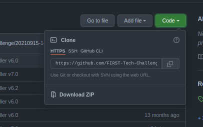
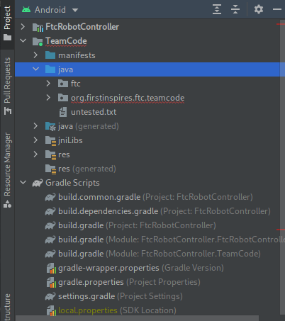

Intro
Building FTC code has been, in my experience, a huge pain. Fortunately, you don't have to build it all yourself. A large source of difficulty in writing code is repetition (think functions with 10 parameters that you have to call fifty times).
This tutorial teaches two different libraries together: The Qualcomm provided framework, and the frontend used by Team 7393 (which exists itself on top of the Qualcomm library). It is intended for those who don't want to be limited by block-based programming anymore, or are just getting started.
Keep in mind, this book is not meant to teach how to do text-based programming. It also isn't meant to be a primer on hardware and configuration in general, which can be found on the FTC github docs. It is only meant to teach these libraries. Basically, if you don't know any, you should go study up on java. Alternatively, if you've already know a curly brace/c-like language, then it might work out for you to just wing it.
Note: Whenever *nix is used here, it refers to operating systems which are somehow based off of Unix, such as Linux, BSD, and such (while excluding Apple operating systems). If you didn't understand some of those words, don't worry: You don't have to.
Development Environment
Java
This step can usually be ignored, since most modern operating systems come with a Java installation
To start, you must first have Java installed. Java 8 or 11 should work, and if you can get Java 16, even better. For Windows or MacOS computers, go to the Oracle site and follow the installation instructions for your OS. For other *nix operating systems, follow the distribution-dependent instructions for installing java.
Android Studio
The editor will be an extension of your hand; the keys will sing as they slice their way through text and thought.
(Andrew Hunt and David Thomas, The Pragmatic Programmer)
Android Studio is an "IDE", or Integrated Development Environment. It serves the same purpose as a text editor, but has "Integrations", such as automatically formatting code and working with version control (TODO: Link this to version control page). The most relevant integration for FTC is donwloading code onto android devices.
To install Android Studio for Windows or MacOS computers, go to the Android Studio site and follow the installation instructions for your OS. For *nix operating systems, follow the distribution-dependent instructions for installing Android Studio.
You should definitely spend some time customizing and familiarizing yourself with Android Studio.
Project Setup
FTC Framework
Your entire project is based off the FTC framework. To begin a new FTC project, copy all of the code from the FTC repository into your own project. You can do this by clicking the "Code" button, then clicking "Download ZIP", as shown.

It is better, though, to use Version Control to do this. This is discussed more in the Version Control section (TODO!!).
You can then start writing your code in (and only in) the TeamCode/src/main/java directory.
In addition, if you open the project in Android Studio and switch to Android project view as shown, you can navigate to TeamCode/java to get to the same directory.

ElectronVolts Library
The latest version of the ElectronVolts library does not exist, as of yet, in its own repository. You can find a copy of it on the ElectronVolts github page, on the current year's repository and branch, in TeamCode/src/main/java/ftc. For example, during the 2021-2022 season, it was in FtcRobotController, on branch Season2021. Copy all the files in that directory to anywhere within your project's working folder.
How the robot works
This part is review for those who've already done FTC.
In summary, the FTC robot core communicates over direct wifi with a phone, which controls the robot core. The robot core, in turn, can control connected hardware. You can read about it on the FTC docs page.
It is important to note that the program installed on the Robot Controller runs instantly. You'll see why this is important in the next section.
FTC Framework
The software on the phone which communicates with the robot is constant. However, the code on the robot is dependent on you. Even so, there's a certain way that your program has to move motors, read from sensors, and communicate with the app on the phone. This is why, when writing your FTC program, you must do it within a framework.
For example, a wrong way to write FTC code:
import com.qualcomm.robotcore.eventloop.opmode.Autonomous;
import com.qualcomm.robotcore.hardware.Servo;
@Autonomous(name = "FooOp")
public class FooOp {
public static void main(String[] args) {
Servo s = (Servo) hardwareMap.get("myServo");
int i = 0;
while (true) {
s.setPosition(i);
i = (i + 10) % 180;
}
}
}
There are a few things wrong with this.
- The
hardwareMapdoes not even exist, so you can't control any hardware. - The
mainmethod here will not be run at all -- remember, the FTC bot runs the program instantly, so it has to do some steps before it can run your code (aka run its own main function). - The
@Autonomousannotation is wrong -- this class is not an "Operation Mode", which is what the framework is expecting. This will probably result in some strange runtime error (TODO: Add a picture of that runtime error).
Here is a correct implementation:
import com.qualcomm.robotcore.eventloop.opmode.Autonomous;
import com.qualcomm.robotcore.eventloop.opmode.LinearOpMode;
import com.qualcomm.robotcore.hardware.Servo;
@Autonomous(name = "FooOp")
public class FooOp extends LinearOpMode {
@Override
public void runOpMode() {
Servo s = (Servo) hardwareMap.get("myServo");
int i = 0;
waitForStart();
while (true) {
s.setPosition(i);
i = (i + 10) % 180;
}
}
}
All the problems in the previous code have been corrected here:
- The
hardwareMapnow exists: It exists in the superclasses ofFooOp - The
@Autonomousannotation now makes sense: It is annotating a class which is a Linear Operation Mode. Furthermore, that means when you download this program, you can use your driver station (or phone) to select and run your code.
The ElectronVolts Library
What it is:
- A tool to make writing FTC code faster
- A collection of classes containing boilerplate code
- Stable
- What this book is trying to get you to use
What it isn't:
- Magic
- Required
The ElectronVolts library contains a lot of helpful stuff, but only if it is used correctly. It's a layer of abstraction on top of the Qualcomm framework, allowing you to write your code in a stable way.
However, learning yet another layer of abstraction is pretty difficult, and if the FTC library suits your purposes, it's what you should stick with. But if you struggle with these problems:
- Value fudging
- Untraceable logic
- Not knowing what's going on
- Insanity
TODO: Add concrete example of a problem
Maybe this library is a good fit for you. If it isn't, then you might want to stop here and read the FTC provided documentation instead.
Library Structure
The library is split up into two parts: electronvolts and evlib. The electronvolts code consists of helper classes which are used to make evlib, which is the part of the library you will probably be using most often. Regardless of what you use, you will need to download both and put them inside the same directory.
In the previous tutorial, you saw the LinearOpMode. There are many others that Qualcomm provides, and can be used along with the ElectronVolts library, but the ElectronVolts library contains its own, preferred Operation Modes, which you will see in the next chapter.
A Starter Program
To start an ElectronVolts TeleOp project, make a new copy of the Qualcomm framework and add this into your TeamCode directory:
java
├── MyRobotCfg.java
└── MyTeleOp.java
We will add the ElectronVolts library into the directory like so:
java
├── MyRobotCfg.java
├── MyTeleOp.java
└── ftc
├── electronvolts
│ └┄┄
├── evlib
┆ └┄┄
Once you've set up those two files, you can start writing FTC code.
Robot Config
In order to access hardware, the Qualcomm framework provides an object called the hardwareMap, which is helpful to think of as a Map<String, HardwareDevice>. You can access sensors and actuators from this object by calling the method get(Class<? extends T>, String) -> T on it.
ElectronVolts takes this a step further by making the abstract class RobotCfg, which presents all of the hardware that the robot has by default, by default. By "present", I mean that if you ask for that hardware (with one of the methods below), it will be given to you.

For example, every FTC compatible phone will have an accelerometer built into itself, and every RobotCfg will also have an accelerometer built into itself. When you have a Robot Config, you can call getAccelerometer() -> Accelerometer on it and work with the accelerometer that way. Like this, we've reduced the amount of arguments you need from two to zero. That might seem small, but little by little, actually sitting down and writing code can become a huge bottleneck. This code will take a bit of that load off the programmer's shoulders.
This is especially important because of the second use for Robot Configs: it decouples the hardware team from the software team. When the hardware team connects a device to the Robot's brain, that change needs to be reflected in the code. If the hardware specification and the software logic are in the same place, it makes it hard for both teams to read and write. With the Robot Config, the hardware team can declare in one place what hardware they are using in their robot, and the software team only has to read from one place to figure out what hardware is being used.
The library is still not magic.
If you write code that is hard to understand, then putting it all in one place won't make it all that better.
Start with a Robot Config like so:
MyRobotCfg.java
import com.qualcomm.robotcore.hardware.HardwareMap;
import ftc.evlib.hardware.config.RobotCfg;
public class MyRobotCfg extends RobotCfg {
public MyRobotCfg(HardwareMap hardwareMap) {
super(hardwareMap);
}
@Override
public void start() {
}
@Override
public void act() {
}
@Override
public void stop() {
}
}
Right now, this config represents an empty bot. It has one brain, one phone, and that's it. This is already pretty powerful -- without any custom logic, you have direct access to all the phone's sensors. This is sufficient for an abstract example, but what if we want to add motors to a bot?
Let's start by adding a simple DC motor to a bot, called "bruh" (keep in mind, this is still not how you would want to do it in practice, but still an example):
public class MyRobotCfg extends RobotCfg {
public final DcMotor myMotor;
public MyRobotCfg(HardwareMap hardwareMap) {
super(hardwareMap);
myMotor = hardwareMap.get(DcMotorEx.class, "bruh");
}
}
Some code is not shown for conciseness.
This also works with the getter pattern, like so:
public class MyRobotCfg extends RobotCfg {
private final DcMotor myMotor;
public DcMotor getMyMotor() {
return myMotor;
}
public MyRobotCfg(HardwareMap hardwareMap) {
super(hardwareMap);
myMotor = hardwareMap.get(DcMotorEx.class, "bruh");
}
}
The complete code should look like this:
import com.qualcomm.robotcore.hardware.DcMotor;
import com.qualcomm.robotcore.hardware.DcMotorEx;
import com.qualcomm.robotcore.hardware.HardwareMap;
import ftc.evlib.hardware.config.RobotCfg;
public class MyRobotCfg extends RobotCfg {
private final DcMotor myMotor;
public DcMotor getMyMotor() {
return myMotor;
}
public MyRobotCfg(HardwareMap hardwareMap) {
super(hardwareMap);
myMotor = hardwareMap.get(DcMotorEx.class, "bruh");
}
@Override
public void start() {
}
@Override
public void act() {
}
@Override
public void stop() {
}
}
This is all the code you need to move to the next step. If there is some other types of hardware you'd like to add, check out the FTC javadoc, or see some more types we've made in the Hardware section.